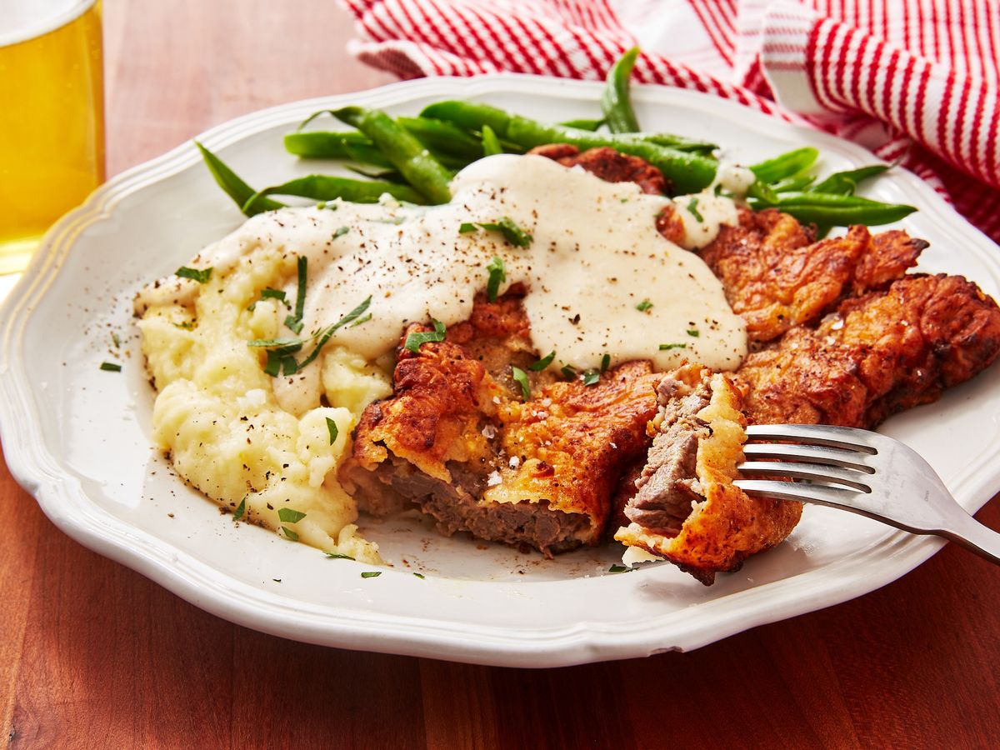

One of the staples of the Southern U.S. cuisine called chicken fried steak contains no chicken at all, contrary to what one might think upon seeing the name of the dish. It consists of a thin, breaded, and fried cut of beef that is traditionally served with a side of mashed potatoes and drizzled with cream gravy.
Meal prep time : 40 minutes
Servings : 4